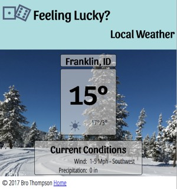

It's time to finish up the Franklin page of our weather site. At this point you should have completed the Franklin: styled activity, and your mobile version of the page should be looking just like the small wireframe and styleguide indicated. the last step is to add the code we need to transform the page to the large wireframe on wider screens.
At the core of the responsive design movement...the structure responsible for bring the magic as it were, is the @media query. A query is a question or condition, and so a "media query" is a question or condition about the media our page is currently being displayed on. The browser can track this, and we can make our designs adapt as a result.
Tasks
Review the large wireframe to remind yourself of how it should look...compare it to what our page currently looks like. Keep it handy as we will be referring back to it often.
Once again I think the best way to proceed will be to create a list of all of the things we need to do to convert our small screen page to the large screen version shown in the large wireframe. Once you are done with your list compare it to mine.
To Do
Align the Logo/headline block to the left edge of the layout.
Move the navbar back up to right below the logo.
Make the hidden content visible.
Change the flow of the main content boxes to horizontal.
Adjust the size on the 3 content boxes to be the same height and width.
Remove the spacing around the content boxes, and the rounded corners.
Move the background image from the main element to the the element that contains the location and temperature info
Change the order of the content boxes to match the wireframe.
Style the Hourly list
Restrict the max-width of the page to 800px to keep it from getting too wide and center the page.
This list was a bit harder to come up with. If you came close great job! The last one I didn't expect you to get. The wireframe doesn't really indicate that it will be necessary...but once we get to that point you will find that this layout really doesn't work well at really wide screen sizes. So I will show you a trick to handle that.
Let's start at the top. Our first task is to change the logo/title at the top. We need the both thing (both lines) to be left aligned, but the second line to still be right aligned. We will probably need ot set a width as well to keep it from going all the way over to the right edge of the browser. We need this change to happen when the browser window gets wide enough that the way it is currently styled starts breaking.
What do I mean by "breaking"? We created the mobile version of our page first. Do this...open up your Franklin page and make your browser window small...like a phone screen. Then start to drag the window wider. As the screen size gets wider and wider you will start to see some issues. The layout will fail and it will start to look icky. I see this first at about 550px. The header breaks first. The lower line starts being not under the top line. The content also starts looking a bit lost with all of the space on the edges.
At each point where we notice problems we can create a breakpoint. Breakpoints are created using a @media query. These are used to allow the browser to apply different CSS rules under different conditions.
Add a media query to your css at the bottom. Let's use 550px as our breakpoint. We need to do 2 things: set a width on the header titles, and make sure they are left aligned. Mine looks like this:
So you may have noticed something when you applied that CSS. When the screen reached a certain width the second line of the title jumped back to be directly under the first line. All we did was set a width.
550px - no media query550px - with a media query adjusting the title
You may be wondering though, where did those numbers come from? 34em? 20em? I thought we wanted our changes to happen at 550px! "Did you just make those up?" you might ask.
Well 34em really is 550px. (550 / 16 ~= 34) 16px is the default font size remember, and an 'em' is a measurement unit based on font size. The other number, 20em, ya...I made that up :) I played around with the size of that box until I found something I thought looked good.
If your headline adjusted as I described congratulations! You've just used your first @media query. If it didn't keep working at it...don't be afraid to ask for help!
Our second task is to bring the navbar back up from the bottom to right below the title block. Think about this for a minute and see if you can figure out how to do it before you continue and look at my solution. (Hint: done correctly you should only need one changed property! Consider at how we made it go to the bottom in the first place.)
Spoiler!
nav {
position: static;
}
Why does that work? Well to get our nav to the bottom we set it's position to fixed. Where would the nav have been if we hadn't done that? At the top where we need it now! We just had to undo the position:fixed and set that property back to the default. How can you know what the default is? W3Schools is your friend here.
Our next task should be pretty straightforward after the last step. We need to make all the hidden content visible. I bet you can figure it out.
Now that we have all of the content showing again, our next task it to make the 3 main content boxes in main flow horizontally instead of vertically, and fix their size and shape. Remember we used flexbox earlier to lay this out. One of the reasons we did that was to make this step much easier.
Flexbox has two orientations: column and row. Changing between them can be done with the flex-direction property. Flexbox also has 2 properties to adjust alignment: justify-content for main axis and align-items for cross axis.
In this case we need to change our axis to row...or horizontal, this will sovle out first issue. The second is to make the boxes all the same size...both height and width. For width we can use the flex property on our flex children, and for the height we can use a special value for cross-axis alignment (align-items) called "stretch". If none of these terms are sounding familiar you shuold go do a bit of review of CSS Tricks
So to accomplish this I tried this:
main {
flex-direction: row;
align-items: stretch;
}
main > section {
flex: 1 0 30%;
}
The first rule changed my flow from column to row. And instructed the elements flexing to stretch to be the same height. The second rule selected all sections that are direct children of main to grow as much as they want up to one share of the space each, to not shrink below where they started, and to start at 30% of the space. That essentially makes all 3 sections the same width.
Time to finish up that middle section. Items f, g, and h. You should know enough to be able to make those changes on your own. I'll give you a bit of help however...a list of the properties you may need to work with: padding, margin, border, border-radius, order, background-image, background-size, and width. Make sure to keep the large wireframe handy so you know what you are shooting for.
Almost there! Only 2 items left. Lets style that Hourly forecast list. There are a few problems here. First we have bullets...they aren't working here...we should remove them. Second the list of hourly items is quite long...and it is stretching out the page. The other 2 content boxes would look better if they were shorter. Finally the time and temp are pretty squished...we should spread them out.
Removing bullets is actually really easy. That is controlled by the list-style-type property. We just need to set that to "none" for this list.
For the height we can just set a limit on that using max-height. This will cause a problem though. You will notice after you apply that (I recommend something like max-height: 12em;) that the grey containing box shrunk, but now the temperatures are spilling out the end! This is because of the overflow property. If you follow that link you will see that the default behavior when content overflows a container is "show". We can set that to "hide" if we don't want to see anythign outside the box, or "auto" if we want a scrollbar to show up when the content is too big. Lets use that.
Finally lets spread out those values. This is an alignment issue...we know that flexbox has really good alignment controls...so lets fix this with flexbox. You may need to do a little work on your list for this to work. This is how my html looks:
I wrapped my times and temps in spans to turn them into elements that I can work with for flexbox. Once that is done then it is a simple matter of turning on flex for each list item, and using justify-content: space-around;
My styles for the hourly list ended up looking like this:
.hourly > ul {
list-style-type: none;
padding-left: 0;
max-height: 12em;
overflow: auto;
}
.hourly ul li {
display: flex;
justify-content: space-around;
}
If you stretch your browser window out wide you will notice that our page layout starts looking...not so great. It gets very stretched out. There are two ways to fix this. first would be to add another media query breakpoint, and change the layout again so that it works on very wide screens. The other is to limit how wide the content area of our page can get. the first would be a great exercise...but lets do the second :) Add the following code to your media query:
body {
width: 80%;
max-width: 800px;
margin: auto;
}
The first line should be self explanatory...we are setting the width of the body to 80%, the second uses the max-width property to say "don't get any bigger than 800px", and the third line performs the magic of centering that block.
At this point we are quite close to having the repsonsive version of our site complete. Adjust any other spacing or font size that you think necessary to get the page to look right for both large and small screens. Make sure you test for both so that if anything you did while working on the large screen broke something for the small screen you can catch it.
Validate your page. Make sure to check both the HTML and CSS now. The easiest way to do this would be to use the Developer tools you installed in the first week. Fix all errors.
Make sure the link on your temporary homepage to this page is still working properly. Then make sure to commit and sync your work in Github Desktop. Check your URL (should look like githubusername.github.io) to make sure all of your changes show, and to check that your images all work.
Grading Matrix
This assessment will be graded for two objectives: 2 and 3.
Objective 2 - 15 points
All CSS is applied with an external stylesheet - 3 points
CSS is organized with whitespace and comments - 3 points
Primary layout of the page is done with Flexbox with minimal use of position or float - 3 points
Responsiveness: The page is responsive and requires no zooming or horizontal scrolling at any size - 3 points
The page is valid CSS3 - 3 points
Objective 3 - 9 points
The page is visually appealing at small and large screen widths (PARC and typography design principles have been applied). - 3 points
Page layout is responsive, matching both large and small wireframe at the appropriate screen size. - 3 points
All text on the page is readable at all screen sizes. (color and size) - 3 points